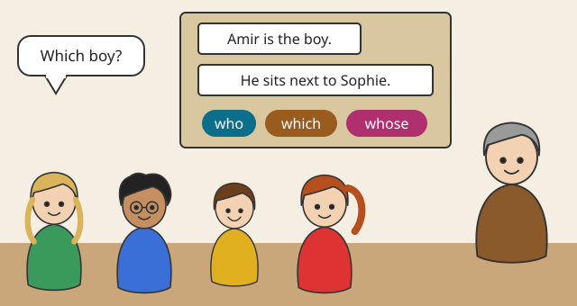

Welcher Junge? who, which, that und whose
Mit einem KI-Tutor lernen
Ein KI-Tutor erklärt dir diese Seite und hilft dir bei den Aufgaben. Wähl deinen Assistenten:
Mit Claude öffnen Mit ChatGPT öffnen Mit Mistral Vibe öffnen
Du nutzt dein eigenes Konto beim Anbieter. Der Assistent ist kein Angebot von lernapps.net: lernapps liefert nur Inhalte und Aufgaben. Die Wahl gilt für alle Seiten, nur auf diesem Gerät.
Welcher Junge?

© CC-BY-4.0Amir hat „Amir is the boy.“ aufgehängt, Ellie den zweiten Streifen. Peter fragt.
Amir hat den Streifen „Amir is the boy.“ aufgehängt. Das heißt: Amir ist der Junge. Peter fragt: „Which boy?“ Welcher Junge? Der Streifen sagt nicht, welcher Junge gemeint ist. Ellie hat einen zweiten Streifen: „He sits next to Sophie.“ Er sitzt neben Sophie.
Aufgabe
Lösung
We play football
Dieser Streifen sagt nichts über den Jungen. Er sagt, was wir tun.
It is red
It steht für eine Sache. Der Streifen sagt nichts über einen Jungen.
He sits next to Sophie richtige Antwort
Der Streifen sagt etwas über den Jungen. So erfährt Peter, welcher Junge gemeint ist.
Ein zweiter Streifen kann sagen, welche Person gemeint ist.
Das kannst du danach: Du sagst genauer, welche Person oder Sache du meinst. Dazu hängst du mit who, which, that oder whose einen zweiten Streifen an.
| Englisch | Deutsch |
|---|---|
| boy | Junge |
| girl | Mädchen |
| man | Mann |
| friend | Freund / Freundin |
| teacher | Lehrer / Lehrerin |
| mother | Mutter |
| sit | sitzen |
| next to | neben |
| live | wohnen |
| teach | unterrichten |
| sing | singen |
| jacket | Jacke |
| bus | Bus |
| funny | lustig |
| nice | nett |
| small | klein |
| red / blue / green / yellow / purple | rot / blau / grün / gelb / lila |
Die Karte ersetzt das Pronomen
Ein Relativsatz ist ein zweiter Streifen, der ein Nomen (zum Beispiel girl oder bike) genauer beschreibt. Die Karte dazwischen heißt Relativkarte. Sie ersetzt das Pronomen im zweiten Streifen: aus „She has a red jacket“ wird „who has a red jacket“. Der Streifen rückt direkt hinter das Nomen.
 © CC-BY-4.0
© CC-BY-4.0Who ersetzt she. Der zweite Streifen rückt hinter the girl.
| Karte | Wofür | Beispiel |
|---|---|---|
| who | Person | Ellie is the girl who has a red jacket. |
| which | Sache | I have a book which is funny. |
| that | Person oder Sache | Peter has a dog that is small. |
| whose | wem etwas gehört | This is the boy whose bike is blue. |
Merke
Die Karte ersetzt das Pronomen, es bleibt nicht stehen. Es heißt „the girl who sings“, nicht „the girl who she sings“. Vor who, which, that und whose steht kein Komma. Hier darf die Karte nicht fehlen, anders als das that bei „I think that …“. Und whose ist nicht who’s: Who’s heißt who is.
Übung
Aufgabe
Lösung
Richtige Antwort: Nur eine Person (keine Sachen). – who; Nur eine Sache (keine Personen). – which; Person oder Sache, beides geht. – that; Es geht darum, wem etwas gehört. – whose
Jede Karte hat ihre Aufgabe. Nur that passt zu Personen und zu Sachen.
Aufgabe
Welche Relativkarte passt in die Lücke? Lies zuerst den deutschen Satz.
- Mr Hill ist der Lehrer, der Englisch unterrichtet. → Mr Hill is the teacher … teaches English.
- Ich habe eine Jacke, die rot ist. → I have a jacket … is red.
- Peter ist der Junge, dessen Hund klein ist. → Peter is the boy … dog is small.
- Das ist der Bus, der zur Schule fährt. → This is the bus … goes to school.
Lösung
- Mr Hill is the teacher who teaches English.
- I have a jacket which is red.
- Peter is the boy whose dog is small.
- This is the bus which goes to school.
Aufgabe
Verbinde die zwei Streifen mit der Relativkarte. Das Pronomen fällt weg. Schreibe den ganzen Satz.
- Peter has a friend · he plays football · who
- I have a bike · it is blue · which
- Ellie has a friend · her mother is a teacher · whose
Lösung
- Peter has a friend who plays football. (auch richtig: Peter has a friend that plays football.)
- I have a bike which is blue. (auch richtig: I have a bike that is blue.)
- Ellie has a friend whose mother is a teacher.
Aufgabe
Übersetze den Satz.
- Ich habe einen Bruder, der Fußball spielt.
- Amir ist der Junge, dessen Fahrrad grün ist.
Lösung
- I have a brother who plays football. (auch richtig: I have a brother that plays football.)
- Amir is the boy whose bike is green. (auch richtig: Amir is the boy whose bicycle is green.)
Aufgabe
Hör zu und schreibe, was du hörst.
- KI
- KI
- KI
Lösung
- I have a friend who lives in Millbrook. (auch richtig: I have a friend that lives in Millbrook.)
- Peter has a jacket which is yellow. (auch richtig: Peter has a jacket that is yellow.)
- Peter has a friend whose jacket is purple.
Selbst sagen und schreiben
Aufgabe
Hör zu, sprich nach und nimm dich auf. Vergleiche dann mit dem Original.
Tipp
Hör den Satz zuerst. Sprich dann langsam nach. Die Karte betonst du kaum.
- Mr Hill is the man who teaches us English.KI
- We have a teacher who is nice.KI
- I have a sister who sings every day.KI
Zum Aufnehmen braucht diese Aufgabe JavaScript. Die Beispiele kannst du auch ohne anhören.
Lösung
- Mr Hill is the man who teaches us English.
- We have a teacher who is nice.
- I have a sister who sings every day.
Offene Aufgabe
Schreibe zwei englische Sätze für die Satzstreifen-Wand. Beschreibe eine Person aus deiner Klasse mit who und eine Sache, die du hast, mit which oder that.
Eine gute Antwort enthält:
Lösung
Ellie is the girl who sits next to Amir. I have a jacket which is green.
Wie es weitergeht
Nächste Woche ist Elternabend, und Mr Hill schreibt einen Zettel für die Tür. Ellie hängt dafür zwei neue Streifen auf: „It rains.“ und „We stay in.“ Auf der nächsten Seite lernst du, mit welcher Karte man sie verbindet.
Fehler gefunden oder eine Idee für diese App?